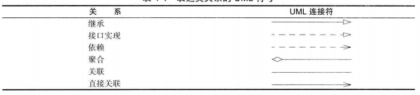

Java中的对象与类
Java 是完全面向对象(OOP)的，而面向对象更加适用于解决规模较大的问题。
一、类和对象
1. 类
类：类是构造对象的模板或蓝图，由类构造对象的过程称为创建类的实例。
封装: 从形式上看，封装不过是将数据和行为组合在一个包中， 并对对象的使用者隐藏了数据的实现方式。
实例域：对象中的数据。
方法：操纵数据的过程。
状态：对于每个特定的类实例（对象）都有一组特定的实例域值。这些值的集合就是这个对象的当前状态。
并不是所有的类都具有面向对象特征，例如Math类只封装了功能，它不需要也不必隐藏数据。
2. 对象
三个主要特征：
- 对象的行为（behavior)—可以对对象施加哪些操作，或可以对对象施加哪些方法。
- 对象的状态（state )—对象状态的改变必须通过调用方法实现，否则会破坏封装性。
- 对象标识（identity )—每个对象都有一个唯一的身份。
对象与对象变量的区别：
1 | Date deadline; //变量deadline不是一个对象， 实际上也没有引用对象,因此还不能将任何 Date 方法应用于这个变量上。 |
3. 类之间的关系
- 依赖（“uses-a”）:一个类的方法操纵另一个类的对象，即一个类依赖于另一个类。又称为耦合度，实际开发中应让这种耦合最小。
- 聚合（“has-a”） :类 A 的对象包含类 B 的对象。
- 继承（“is-a”）:用于表示特殊与一般关系。如果类 A 扩展类 B, 类 A 不但包含从类 B 继承的方法，还会拥有一些额外的功能。
表示关系的UML符号：

二、使用预定义类
1. Java类库中的LocalDate类
1 | Local Date.now(); //使用类中的静态工厂方法 |
2. CregorianCalendar类
1 | CregorianCalendar someDay = new CregorianCalendar(1999, 11, 31); |
三、用户自定义类
1 | class Employee |
1. 多个源文件的使用
在开发中习惯于将每一个类存在一个单独的源文件中，这时既可以显式编译也可以隐式编译。当 Java 编译器发现 EmployeeTest.java 使用 Employee 类时会查找名为 Employee.class 的文件。如果没有找到这个文件， 就会自动地搜索 Employee.java, 然后，对它进行编译。如果 Employee,java 版本较已有的 Employee.class 文件版本新，Java 编译器就会自动地重新编译这个文件。
2. 封装
封装一个类一般提供下面三项内容：
- 私有的数据域；
- 公有的域访问器方法；
- 一个公有的域更改器方法。
3. 基于类的访问权限
类中的方法可以访问所属类对象的私有特性, 而不仅限于访问隐式参数的私有特性。
1 | class Employee |
4. 私有方法
绝大多数方法都被设计为公有的，但在某些特殊情况下，也可能将它们设计为私有的。有些辅助方法不应该成为公有接口的一部分，这是由于它们往往与当前的实现机制非常紧密， 或者需要一个特别的协议以及一个特别的调用次序。在 Java 中，为了实现一个私有的方法， 只需将关键字 public 改为 private 即可。只要方法是私有的，类的设计者就可以确信：它不会被外部的其他类操作调用，可以将其删去。如果方法是公有的， 就不能将其删去，因为其他的代码很可能依赖它。
5. final 实例域
1 | class Employee |
四、静态域与静态方法
1. 静态域
1 | class Employee |
2. 静态常量
静态变量使用得比较少，但静态常量却使用得比较多。静态常量可以被设置为public，因为final常量不允许被修改。
1 | public class Math |
3. 静态方法
使用静态方法的两种情况：
- 一 方法不需要访问对象状态，其所需参数都是通过显式参数提供（例如：Math.pow)。
- 一个方法只需要访问类的静态域。
1 | //静态方法不能访问实例域， 因为它不能操作对象。但是，静态方法可以访问自身类中的静态域 |
如果一个域是静态的基本数据类型域，且也没有对它进行初始化，那么它就会获得基本类型的标准初值；如果它是一个对象引用，那么它的默认初始化的值就是null。static关键字不能应用于局部变量，因此它只能作用于域。
4. 工厂方法
工厂方法是静态方法的另一种常见用途，类似 LocalDate 和 NumberFormat 的类使用静态工厂方法来构造对象。
1 | NumberFormat currencyFormatter = NumberFormat.getCurrencylnstance(); |
使用工厂方法的两个原因：
- 无法命名构造器。构造器的名字必须与类名相同。但是， 这里希望将得到的货币实例和百分比实例采用不用的名字。
- 当使用构造器时，无法改变所构造的对象类型。而 Factory 方法将返回一个 DecimalFormat类对象，这是 NumberFormat 的子类。
5. main方法
- main方法也是一种静态方法，不能操作所在类的实例域。静态的main 方法将执行并创建程序所需要的对象。
- 每一个类可以有一个 main 方法。这是一个常用于对类进行单元测试的技巧。可独立的对类进行测试。
五、方法参数
- 按值调用：表示方法接收的是调用者提供的值，即形参为实参的一个拷贝，对形参的修改不能改变实参的值。
- 按引用调用：表示方法接收的是调用者提供的变量地址。
- Java 总是采用按值调用，方法不能修改传递给它的任何参数变量的内容。
1 | public static void tripieValue(double x) // doesn't work |
六、对象构造
1. 重载
- 方法签名：要完整地描述一个方法，需要指出方法名以及参数类型。这叫做方法的签名。返回类型不是方法签名的一部分。
- 重载：多个方法有相同的名字、 不同的参数，便产生了重载。不能有两个名字相同、 参数类型也相同却返回不同类型值的方法。
- 重载解析:通过用各个方法给出的参数类型与特定方法调用所使用的值类型进行匹配来挑选出相应的方法。如果编译器找不到匹配的参数， 就会产生编译时错误。
2. 默认域初始化
- 如果在构造器中没有显式地给域赋予初值，那么就会被自动地赋为默认值： 数值为 0、布尔值为 false、 对象引用为 null。
- 域与局部变量不同，必须明确地初始化方法中的局部变量。
3. 无参数的构造器
- 如果在编写一个类时没有编写构造器， 那么系统就会提供一个无参数构造器。这个构造器将所有的实例域设置为默认值。
- 如果类中提供了至少一个构造器， 但是没有提供无参数的构造器， 则在构造对象时如果没有提供参数就会被视为不合法。此时必须显式提供一个不带参数的构造器才可以将所有的实例域设置为默认值。
4. 显式域初始化
1 | class Employee{ |
域初始化的顺序很复杂，调用构造器的具体处理步骤：
- 初始化父类中的静态成员变量和静态代码块 ；
- 初始化子类中的静态成员变量和静态代码块 ；
- 初始化父类的普通成员变量和代码块，再执行父类的构造方法；
- 初始化子类的普通成员变量和代码块，再执行子类的构造方法；
5. 参数名
1 | public Employee(String aNaie, double aSalary) { |
6. 利用this调用同一个类中的另一个构造器
1 | //可有效减少代码重复 |
七、包
使用包的主要原因是确保类名的唯一性，而不会产生冲突。
1. 类的导入
一个类可以使用所属包中的所有类， 以及其他包中的公有类。
1 | java.time.LocalDate today = java.tine.LocalDate.now(); //繁琐 |
2. 静态导入
1 | import static java.lang.System.*; |
3. 将类放入包中
如果没有在源文件中放置 package 语句， 这个源文件中的类就被放置在一个默认包(没有名字)中。
1 | package com.horstmann.corejava; |
编译器在编译源文件的时候不检查目录结构。如果源文件不在指定package中且不依赖于其他包， 就不会出现编译错误。但是， 最终的程序将无法运行，因为虚拟机找不到类。
4. 包作用域
- 标记为 public 的部分可以被任意的类使用；
- 标记为 private 的部分只能被定义它们的类使用。
- 如果没有指定 public 或 private , 这个部分（类、方法或变量）可以被同一个包中的所有方法访问。
八、类路径
类路径是所有包含类文件的路径的集合。
类路径包含三种情况：
- 基目录 /home/user/classdir 或 c:\classes
- 当前目录 (.);
- JAR 文件 /home/user/archives/archive.jar 或c:\archives\archive.jar
类路径所列出的目录和归档文件是搜寻类的起始点。
1. 虚拟机搜寻类文件的过程
- 首先要查看存储在 jre/lib 和jre/lib/ext 目录下的归档文件中所存放的系统类文件。
- 若找不到相应类文件，再查看类路径。
/home/user/classdir/com/horstmann/corejava/Employee.class
com/horstmann/corejava/Employee.class 从当前目录开始
com/horstmann/corejava/Employee.class inside /home/user/archives/archive.jar
2. 编译器搜寻类文件的过程
- 如果引用了一个类，而没有指出这个类所在的包， 那么编译器将首先查找包含这个类的包，并询查所有的 import 指令，确定其中是否包含了被引用的类。
- 如果找到了一个以上的类， 就会产生编译错误。
- 编译器还要查看源文件是否比类文件新，如果是这样的话，那么源文件就会被自动地重新编译。
3. 设置类路径
1 | //采用 -classpath (或 -cp) 选项指定类路径 |
九、文档注释
利用JDK中的javadoc命令工具，可以由源文件生成一个 HTML 注释(/** */)文档。文档注释与源代码在同一个文件中，在修改源代码的同时， 重新运行 javadoc 就可以轻而易举地保持两者的一致性。
1. 注释的插入
javadoc抽取信息生成文档的位置如下，也应当在这些位置编写注释：
- 包
- 公有类与接口
- 公有的和受保护的构造器及方法
- 公有的和受保护的域
文档注释的格式：
1 | /** |
2. 类注释
类注释必须放在 import 语句之后，类定义之前。
3. 方法注释
每一个方法注释必须放在所描述的方法之前。可以使用以下标记：@param:对当前方法的“ param” （参数）部分添加一个条目。这个描述可以占据多行， 并可以使用 HTML 标记。一个方法的所有 @param 标记必须放在一起。@return:这个标记将对当前方法添加“ return” （返回）部分。这个描述可以跨越多行， 并可以使用 HTML 标记。©throws:这个标记将添加一个注释， 用于表示这个方法有可能抛出异常。
4. 域注释
只需要对公有域（通常指的是静态常量）建立文档。
5. 通用注释
用于类文档的注释中。
1 | /** |
6. 包与概述注释
要想产生包注释，就需要在每一个包目录中添加一个单独的文件。有两种方式添加：
- 提供一个以 package.html 命名的 HTML 文件。在标记 <body>—</body> 之间的所有文本都会被抽取出来。
- 提供一个以 package-info.java 命名的 Java 文件。这个文件必须包含一个初始的以 /** 和 */ 界定的 Javadoc 注释， 跟随在一个包语句之后。它不应该包含更多的代码或注释。
还可以为所有的源文件提供一个概述性的注释。名为overview,html 的文件中，这个文件位于包含所有源文件的父目录中。标记<body>—</body>间的所有文本将被抽取出来。
7. 注释的抽取
详见http://docs.oracle.com/javase/8/docs/guides/javadoc
1 | //docDirectory为HTML文件的存放目录 |
十、类设计技巧
- 一定要保证数据私有
- 一定要对数据初始化
- 不要在类中使用过多的基本类型
- 不是所有的域都需要独立的域访问器和域更改器
- 将职责过多的类进行分解
- 类名和方法名要能够体现它们的职责
- 优先使用不可变的类